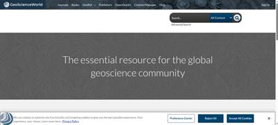
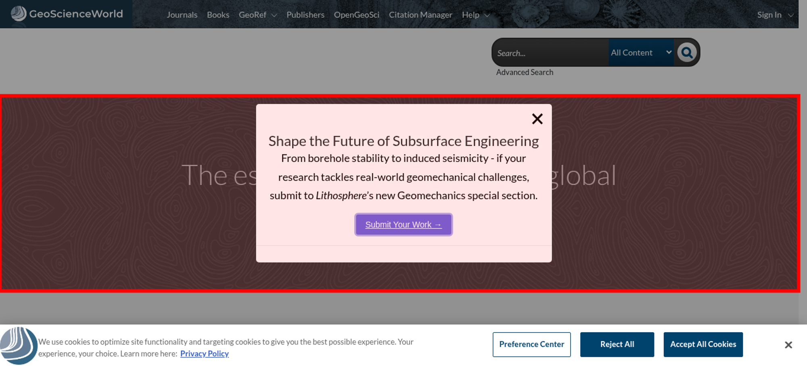
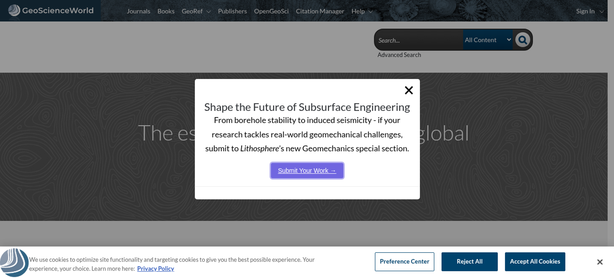

Tested 2025-11-15 02:37:40 using Chrome 141.0.7390.107 (runtime settings).
| Metric | Value |
|---|---|
| Page metrics | |
| Performance score | 60 |
| Total page size | 16.3 MB |
| Requests | 172 |
| Timing metrics | |
| TTFB | 387 ms |
| First Paint | 1.032 s |
| Fully Loaded | 9.588 s |
| Google Web Vitals | |
| TTFB | 387 ms |
| First Contentful Paint (FCP) | 1.032 s |
| Largest Contentful Paint (LCP) | 1.588 s |
| Cumulative Layout Shift (CLS) | 0.00 |
| 104 ms | |
| Total Blocking Time | 73 ms |
| Max Potential FID | 110 ms |
| CPU metrics | |
| CPU long tasks | 5 |
| CPU last long task happens at | 2.325 s |
| Visual Metrics | |
| First Visual Change | 1.033 s |
| Speed Index | 4.204 s |
| Visual Complete 85% | 4.733 s |
| Visual Complete 99% | 4.933 s |
| Last Visual Change | 4.933 s |

Choose HAR:
Use--filmstrip.showAll to show all filmstrips.
 0 s1 sLayout Shift 0.00009 986 ms
0 s1 sLayout Shift 0.00009 986 ms
2.5 sThe coach helps you find performance problems on your web page using web performance best practice rules. And gives you advice on privacy and best practices. Tested using Coach-core version 8.1.3.

| Title | Advice | Score |
|---|---|---|
| Meta description (metaDescription) | The page is missing a meta description. | 0 |
| Description: Use a page description to make the page more relevant to search engines. | ||
| Do not send too long headers (longHeaders) | https://js.hs-banner.com/21550794.js has a header access-control-allow-headers that is 682 characters long. https://pubs.geoscie.../99eb5e404c1cf278 has a header cf-chl-out-s that is 1713 characters long. https://l.sharethis....arethis.com/pview has a header location that is 683 characters long. https://l.sharethis.....sharethis.com/sc has a header location that is 683 characters long. | 96 |
| Description: Do not send response headers that are too long. | ||
| Offenders: | ||
| Avoid use too many response headers (manyHeaders) | https://rev.trendmd....d-sets/identifier has 31 headers.https://rev.trendmd....6baa87bb/settings has 31 headers. | 98 |
| Description: Avoid send too many response headers. | ||
| Offenders: | ||
| Avoid too many third party requests (thirdParty) | The page do more requests to third party domains (168 requests and 17.1 MB) then first party (4 requests and 19.3 kB). The page transfer more bytes from third party domains (17.1 MB) then first party (19.3 kB). The regex .*geoscienceworld.* was used to calculate first/third party requests. | 0 |
| Description: Do not load most of your content from third party URLs. | ||
| Avoid unnecessary headers (unnecessaryHeaders) | There are 26 responses that sets a p3p header. There are 85 responses that sets both a max-age and expires header. There are 36 responses that sets a pragma no-cache header (that is a request header). There are 1 response that sets a x-frame-options:sameorigin header. There are 136 responses that sets a server header. | 0 |
| Description: Do not send headers that you don't need. We look for p3p, cache-control and max-age, pragma, server and x-frame-options headers. Have a look at Andrew Betts - Headers for Hackers talk as a guide https://www.youtube.com/watch?v=k92ZbrY815c or read https://www.fastly.com/blog/headers-we-dont-want. | ||
| Offenders: | ||
| Title | Advice | Score |
|---|---|---|
| Avoid using Google Analytics (ga) | The page is using Google Analytics meaning you share your users private information with Google. You should use analytics that care about user privacy, something like https://matomo.org. | 0 |
| Description: Google Analytics share private user information with Google that your user hasn't agreed on sharing. | ||
| Set a referrer-policy header to make sure you do not leak user information. (referrerPolicyHeader) | Set a referrer-policy header to make sure you do not leak user information. | 0 |
| Description: Referrer Policy is a new header that allows a site to control how much information the browser includes with navigations away from a document and should be set by all sites. https://scotthelme.co.uk/a-new-security-header-referrer-policy/. | ||
| Offenders: | ||
| Avoid third party cookies that is used to track the user. (thirdPartyCookies) | The page sets 10 third party cookies. | 0 |
| Description: Third party cookies are used to track the user. They are automatically blocked in Safari and Firefox. | ||
| Offenders: | ||
| Do not share user data with third parties. (thirdPartyPrivacy) | The page has 68% requests that are 3rd party (117 requests with a size of 2.6 MB). The page also have request to companies that harvest data from users and do not respect users privacy (see https://en.wikipedia.org/wiki/Surveillance_capitalism). The page do 48 survelliance requests and uses 5 survelliance tools. The page do 1 consent-provider request and uses 1 consent-provider tool. The page do 13 tag-manager requests and uses 1 tag-manager tool. The page do 31 analytics requests and uses 3 analytics tools. The page do 15 marketing requests and uses 3 marketing tools. The page do 15 social requests and uses 1 social tool. The page do 33 ad requests and uses 11 ad tools. | 0 |
| Description: Using third party requests shares user information with that third party. Please avoid that! The project https://github.com/patrickhulce/third-party-web is used to categorize first/third party requests. | ||
| Offenders: | ||
| Page info | |
|---|---|
| Title | GeoScienceWorld |
| Width | 1365 |
| Height | 1987 |
| DOM elements | 648 |
| Avg DOM depth | 10 |
| Max DOM depth | 20 |
| Iframes | 6 |
| Script tags | 48 |
| Local storage | 49.3 KB |
| Session storage | 48 B |
| Network Information API | 4g |
Data collected using Wappalyzer version 6.10.54. With updated code from Webappanalyzer 2024-12-27. Use --browsertime.firefox.includeResponseBodies htmlor --browsertime.chrome.includeResponseBodies htmlto help Wappalyzer find more information about technologies used.
| Technology | Confidence | Category |
|---|---|---|
| Node.js | 100 | Programming languages |
| Microsoft ASP.NET 4.0.30319 | 100 | Web frameworks |
| Envoy | 100 | Reverse proxies |
| Google Cloud | 100 | IaaS |
| lighttpd 1.4.79 | 100 | Web servers |
| Express | 100 | Web frameworks Web servers |
| Amazon Web Services | 100 | PaaS |
| HSTS | 100 | Security |
| Google Cloud Trace | 100 | Performance |
| Cloudflare Bot Management | 100 | Security |
| Cloudflare | 100 | CDN |
| Amazon CloudFront | 100 | CDN |
| HTTP/3 | 100 | Miscellaneous |
Data collected using Third Party Web 0.26.2
| Cdn |
|---|
| Google CDN |
| Google Fonts |
| JSDelivr CDN |
| Survelliance |
| Google CDN |
| Google Fonts |
| Google Tag Manager |
| Google Analytics |
| Google/Doubleclick Ads |
| Consent-provider |
| Optanon |
| Tag-manager |
| Google Tag Manager |
| Analytics |
| Google Analytics |
| Hotjar |
| LiveRamp IdentityLink |
| Marketing |
| Hubspot |
| Madison Logic |
| Zync |
| Social |
| ShareThis |
| Ad |
| Google/Doubleclick Ads |
| LinkedIn Ads |
| Crowd Control |
| The Trade Desk |
| Eyeota |
| Yahoo! |
| StackAdapt |
| DMD Marketing |
| IPONWEB |
| AppNexus |
| Rocket Fuel |
| Other |
| Arbor |
| Visual Metrics | |
|---|---|
| First Visual Change | 1.033 s |
| Speed Index | 4.204 s |
| Visual Complete 85% | 4.733 s |
| Visual Complete 95% | 4.800 s |
| Visual Complete 99% | 4.933 s |
| Last Visual Change | 4.933 s |
| Visual Readiness | 3.900 s |
| Navigation Timing | |
|---|---|
| backEndTime | 387 ms |
| domContentLoadedTime | 1.536 s |
| domInteractiveTime | 1.536 s |
| domainLookupTime | 22 ms |
| frontEndTime | 3.812 s |
| pageDownloadTime | 15 ms |
| pageLoadTime | 4.214 s |
| redirectionTime | 0 ms |
| serverConnectionTime | 38 ms |
| serverResponseTime | 340 ms |
| Google Web Vitals | |
|---|---|
| Time to first byte (TTFB) | 387 ms |
| First Contentful Paint (FCP) | 1.032 s |
| Largest Contentful Paint (LCP) | 1.588 s |
| Cumulative Layout Shift (CLS) | 0.00 |
| Interaction to next paint (INP) | 104 ms |
| Total Blocking Time (TBT) | 73 ms |
| Extra timings | |
|---|---|
| TTFB | 387 ms |
| First Paint | 1.032 s |
| Load Event End | 4.221 s |
| Fully loaded | 9.588 s |
When in time the page main content is rendered (collected using the Largest Contentful Paint API). Read more about Largest Contentful Paint.
| Element type | DIV |
| Element/tag | <div class="widget-DynamicWidgetLayout widget-instance-Home_MainContentB0"></div> |
| Render time | 1.588 s |
| Element render delay | 1.201 s |
| TTFB | 387 ms |
| Resource delay | 0 ms |
| Resource load duration | 0 ms |
| Load time | 1.573 s |
| URL | https://gsw.silverch...rs_background.png |
| Size (width*height) | 445500 |
| DOM path | |
| div#main > section > div > div > div > div:eq(1) > div > div > div > div > div:eq(0)> div#main > section > div > div > div > div:eq(1) > div > div > div > div > div:eq(0)> | |

The largest contentful paint is highlighted in the image. If no element is highlighted the element was removed before the screenshot or the LCP API couldn't find the element.
The Largest Contentful Paint API highlighted this image as a part of the LCP.

0.00411 cumulative layout shift collected from the Cumulative Layout Shift API.
These HTML elements contribute most to the Cumulative Layout Shifts of the page. The higher score, the more layout shift.
| Score | HTML Element |
|---|---|
| 0.00129 | <div id="onetrust-banner-sdk" class="otFlat bottom ot-wo-title ot-bnr-w-logo" tabindex="0" role="region" aria-label="Cookie banner" style="bottom: 0px;"></div>,<div id="onetrust-close-btn-container"></div>,<button class="onetrust-close-btn-handler onetrust-close-btn-ui banner-close-button ot-close-icon" style="background-image: url("https://cookie-cdn.cookiepro.com/logos/static/ot_close.svg");" aria-label="Close"></button> |
| body > div#onetrust-consent-sdk > div#onetrust-banner-sdk,body > div#onetrust-consent-sdk > div#onetrust-banner-sdk > div > div#onetrust-close-btn-container,body > div#onetrust-consent-sdk > div#onetrust-banner-sdk > div > div#onetrust-close-btn-container > button | |
| 0.00044 | <div id="onetrust-banner-sdk" class="otFlat bottom ot-wo-title ot-bnr-w-logo" tabindex="0" role="region" aria-label="Cookie banner" style="bottom: 0px;"></div> |
| body > div#onetrust-consent-sdk > div#onetrust-banner-sdk | |
| 0.00040 | <div id="onetrust-banner-sdk" class="otFlat bottom ot-wo-title ot-bnr-w-logo" tabindex="0" role="region" aria-label="Cookie banner" style="bottom: 0px;"></div> |
| body > div#onetrust-consent-sdk > div#onetrust-banner-sdk | |
| 0.00037 | <div id="onetrust-banner-sdk" class="otFlat bottom ot-wo-title ot-bnr-w-logo" tabindex="0" role="region" aria-label="Cookie banner" style="bottom: 0px;"></div> |
| body > div#onetrust-consent-sdk > div#onetrust-banner-sdk | |
| 0.00033 | <div id="onetrust-banner-sdk" class="otFlat bottom ot-wo-title ot-bnr-w-logo" tabindex="0" role="region" aria-label="Cookie banner" style="bottom: 0px;"></div> |
| body > div#onetrust-consent-sdk > div#onetrust-banner-sdk | |
| 0.00031 | <div id="onetrust-banner-sdk" class="otFlat bottom ot-wo-title ot-bnr-w-logo" tabindex="0" role="region" aria-label="Cookie banner" style="bottom: 0px;"></div> |
| body > div#onetrust-consent-sdk > div#onetrust-banner-sdk | |
| 0.00029 | <div id="onetrust-banner-sdk" class="otFlat bottom ot-wo-title ot-bnr-w-logo" tabindex="0" role="region" aria-label="Cookie banner" style="bottom: 0px;"></div> |
| body > div#onetrust-consent-sdk > div#onetrust-banner-sdk | |
| 0.00028 | <div id="onetrust-banner-sdk" class="otFlat bottom ot-wo-title ot-bnr-w-logo" tabindex="0" role="region" aria-label="Cookie banner" style="bottom: 0px;"></div> |
| body > div#onetrust-consent-sdk > div#onetrust-banner-sdk | |
| 0.00016 | <div id="onetrust-banner-sdk" class="otFlat bottom ot-wo-title ot-bnr-w-logo" tabindex="0" role="region" aria-label="Cookie banner" style="bottom: 0px;"></div> |
| body > div#onetrust-consent-sdk > div#onetrust-banner-sdk | |
| 0.00009 | <div class="site-theme-header-menu-item_wrap tablet-menu" id="tablet-user-dropdown" data-theme-dropdown="tablet-user-dropdown"></div>,<li class="site-menu-item site-menu-lvl-0 site-menu-item-Publishers" id="site-menu-item-45432"></li>,<li class="site-menu-item site-menu-lvl-0 site-menu-item-OpenGeoSci" id="site-menu-item-87322"></li>,<li class="site-menu-item site-menu-lvl-0 site-menu-item-Citation-Manager" id="site-menu-item-68615"></li>,<div class="navbar-search-filter_wrap"></div> |
| body > section:eq(0) > div:eq(1) > div:eq(1) > div > div > div:eq(1) > div#tablet-user-dropdown,body > section:eq(0) > div:eq(1) > div:eq(1) > div > div > div:eq(0) > nav > div:eq(1) > ul > li#site-menu-item-45432,body > section:eq(0) > div:eq(1) > div:eq(1) > div > div > div:eq(0) > nav > div:eq(1) > ul > li#site-menu-item-87322,body > section:eq(0) > div:eq(1) > div:eq(1) > div > div > div:eq(0) > nav > div:eq(1) > ul > li#site-menu-item-68615,body > section:eq(0) > div:eq(1) > div:eq(2) > div > div:eq(0) > div:eq(2) > div:eq(0) > form > fieldset > div:eq(1) | |
| 0.00007 | <div id="onetrust-banner-sdk" class="otFlat bottom ot-wo-title ot-bnr-w-logo" tabindex="0" role="region" aria-label="Cookie banner" style="bottom: 0px;"></div> |
| body > div#onetrust-consent-sdk > div#onetrust-banner-sdk | |
| 0.00004 | <li class="site-menu-item site-menu-lvl-0 site-menu-item-Publishers" id="site-menu-item-45432"></li>,<li class="site-menu-item site-menu-lvl-0 site-menu-item-OpenGeoSci" id="site-menu-item-87322"></li>,<li class="site-menu-item site-menu-lvl-0 site-menu-item-Citation-Manager" id="site-menu-item-68615"></li>,<div class="site-theme-header-menu-item not-authenicated"></div>,<div class="site-theme-header-menu-item_wrap tablet-menu" id="tablet-user-dropdown" data-theme-dropdown="tablet-user-dropdown"></div> |
| body > section:eq(0) > div:eq(1) > div:eq(1) > div > div > div:eq(0) > nav > div:eq(1) > ul > li#site-menu-item-45432,body > section:eq(0) > div:eq(1) > div:eq(1) > div > div > div:eq(0) > nav > div:eq(1) > ul > li#site-menu-item-87322,body > section:eq(0) > div:eq(1) > div:eq(1) > div > div > div:eq(0) > nav > div:eq(1) > ul > li#site-menu-item-68615,body > section:eq(0) > div:eq(1) > div:eq(1) > div > div > div:eq(1) > div#tablet-user-dropdown > div,body > section:eq(0) > div:eq(1) > div:eq(1) > div > div > div:eq(1) > div#tablet-user-dropdown | |
| 0.00003 | <div id="onetrust-banner-sdk" class="otFlat bottom ot-wo-title ot-bnr-w-logo" tabindex="0" role="region" aria-label="Cookie banner" style="bottom: 0px;"></div> |
| body > div#onetrust-consent-sdk > div#onetrust-banner-sdk | |
| 0.00001 | <div id="onetrust-banner-sdk" class="otFlat bottom ot-wo-title ot-bnr-w-logo" tabindex="0" role="region" aria-label="Cookie banner" style="bottom: 0px;"></div> |
| body > div#onetrust-consent-sdk > div#onetrust-banner-sdk | |

The elements that have shifted place is highlighted in the image (that have a higher value than 0.01). If the element shifted outside of the viewport, you will not see it there. It can be hard to understand what content that has shifted, if that's the case, checkout the video or the filmstrip of the run.
Interaction to Next Paint (INP) is a metric that try to measure responsiveness. It's useful if you are testing user journeys. Read more about Interaction to Next Paint.
The measured latency was 104 ms.
| Event type | pointerenter |
| Element type | |
| Element class name | |
| Event target | |
| Load state when the event happened | loading |
Read more about the Long Animation Frames API here here.
The top 10 longest animation frames entries
| Blocking duration | Work duration | Render duration | PreLayout Duration | Style And Layout Duration |
|---|---|---|---|---|
| 60.9 ms | 10.4 ms | 109.9 ms | 109.9 ms | 0 ms |
| No availible script information. | ||||
| Blocking duration | Work duration | Render duration | PreLayout Duration | Style And Layout Duration |
|---|---|---|---|---|
| 5.9 ms | 60.4 ms | 0.3 ms | 0.3 ms | 0 ms |
| https://www.googletagmanager.com/gtag/js?id=G-11RK1D9N56&cx=c&_slc=1 | ||||
Invoker: https://www.googletagmanager.com/gtag/js?id=G-11RK1D9N56&cx=c&_slc=1 | ||||
| Blocking duration | Work duration | Render duration | PreLayout Duration | Style And Layout Duration |
|---|---|---|---|---|
| 4.7 ms | 59.5 ms | 0.3 ms | 0.3 ms | 0 ms |
| https://pubs.geoscienceworld.org/cdn-cgi/challenge-platform/h/b/scripts/jsd/93954b626b88/main.js? | ||||
Invoker: https://pubs.geoscienceworld.org/cdn-cgi/challenge-platform/h/b/scripts/jsd/93954b626b88/main.js? | ||||
| Blocking duration | Work duration | Render duration | PreLayout Duration | Style And Layout Duration |
|---|---|---|---|---|
| 4.6 ms | 56.9 ms | 0.3 ms | 0.3 ms | 0 ms |
| https://script.hotjar.com/modules.f7b829d5d96e959c0829.js | ||||
Invoker: https://script.hotjar.com/modules.f7b829d5d96e959c0829.js | ||||
| Blocking duration | Work duration | Render duration | PreLayout Duration | Style And Layout Duration |
|---|---|---|---|---|
| 0.518 ms | 50.5 ms | 0 ms | 0 ms | 0 ms |
| https://www.googletagmanager.com/gtag/js?id=G-YVB7JQBY6Z&cx=c>m=4e5bc1 | ||||
Invoker: https://www.googletagmanager.com/gtag/js?id=G-YVB7JQBY6Z&cx=c>m=4e5bc1 | ||||
| Blocking duration | Work duration | Render duration | PreLayout Duration | Style And Layout Duration |
|---|---|---|---|---|
| 0.012 ms | 50.1 ms | 0.2 ms | 0.2 ms | 0 ms |
| https://www.googletagmanager.com/gtag/js?id=G-LK2NSTY4C0&cx=c&_slc=1 | ||||
Invoker: https://www.googletagmanager.com/gtag/js?id=G-LK2NSTY4C0&cx=c&_slc=1 | ||||
| Blocking duration | Work duration | Render duration | PreLayout Duration | Style And Layout Duration |
|---|---|---|---|---|
| 0 ms | 514.3 ms | 17.9 ms | 0 ms | 17.9 ms |
| https://ajax.googleapis.com/ajax/libs/jquery/3.4.1/jquery.min.js | ||||
Invoker: https://ajax.googleapis.com/ajax/libs/jquery/3.4.1/jquery.min.js | ||||
| https://widgets.figshare.com/static/figshare.js | ||||
Invoker: https://widgets.figshare.com/static/figshare.js | ||||
There are no Server Timings.
There are no custom configured scripts.
There are no custom extra metrics from scripting.
| name | value |
|---|---|
| AudioHandlers | 0 |
| AudioWorkletProcessors | 0 |
| Documents | 29 |
| Frames | 16 |
| JSEventListeners | 654 |
| LayoutObjects | 761 |
| MediaKeySessions | 0 |
| MediaKeys | 0 |
| Nodes | 3086 |
| Resources | 159 |
| ContextLifecycleStateObservers | 41 |
| V8PerContextDatas | 8 |
| WorkerGlobalScopes | 0 |
| UACSSResources | 0 |
| RTCPeerConnections | 0 |
| ResourceFetchers | 29 |
| AdSubframes | 0 |
| DetachedScriptStates | 4 |
| ArrayBufferContents | 55 |
| LayoutCount | 74 |
| RecalcStyleCount | 101 |
| LayoutDuration | 27 |
| RecalcStyleDuration | 21 |
| DevToolsCommandDuration | 4 |
| ScriptDuration | 903 |
| V8CompileDuration | 1 |
| TaskDuration | 1299 |
| TaskOtherDuration | 343 |
| ThreadTime | 1 |
| ProcessTime | 3 |
| JSHeapUsedSize | 46184192 |
| JSHeapTotalSize | 56041472 |
| FirstMeaningfulPaint | 1034 |
How the page is built.
| Summary | |
|---|---|
| HTTP version | HTTP/2.0 |
| Total requests | 172 |
| Total domains | 54 |
| Total transfer size | 16.3 MB |
| Total content size | 23.2 MB |
| Responses missing compression | 56 |
| Number of cookies | 29 |
| Third party cookies | 10 |
| Requests per response code | |
|---|---|
| 200 | 126 |
| 204 | 14 |
| 301 | 2 |
| 302 | 21 |
| 303 | 4 |
| 307 | 5 |
| URL | Type | Transfer Size | Content Size |
|---|---|---|---|
| https://gsw.silverch...ock_184736036.jpg | image | 12.6 MB | 12.6 MB |
| https://gsw.silverch...thead_with_bg.png | image | 337.1 KB | 336.1 KB |
| https://cdn.jsdelivr.../tex-mml-chtml.js | javascript | 251.1 KB | 1.1 MB |
| https://securepubads...01/pubads_impl.js | javascript | 191.7 KB | 606.2 KB |
| https://www.googleta...nager.com/gtag/js | javascript | 162.7 KB | 503.7 KB |
| https://gsw.silverch...rs_background.png | image | 158.4 KB | 157.6 KB |
| https://www.googleta...nager.com/gtag/js | javascript | 148.0 KB | 434.5 KB |
| https://www.googleta...nager.com/gtag/js | javascript | 148.0 KB | 434.5 KB |
| https://www.googleta...anager.com/gtm.js | javascript | 143.7 KB | 418.8 KB |
| https://www.googleta...nager.com/gtag/js | javascript | 134.0 KB | 380.2 KB |
| https://www.googleta...nager.com/gtag/js | javascript | 133.6 KB | 378.2 KB |
| https://www.googleta...nager.com/gtag/js | javascript | 131.5 KB | 370.7 KB |
| https://www.googleta...nager.com/gtag/js | javascript | 131.5 KB | 370.7 KB |
| https://www.googleta...nager.com/gtag/js | javascript | 131.5 KB | 370.7 KB |
| https://www.googleta...nager.com/gtag/js | javascript | 131.5 KB | 370.6 KB |
| https://www.googleta...nager.com/gtag/js | javascript | 131.5 KB | 370.6 KB |
| https://www.googleta...nager.com/gtag/js | javascript | 131.5 KB | 370.6 KB |
| https://cookie-cdn.c....0/otBannerSdk.js | javascript | 109.3 KB | 449.5 KB |
| https://gsw.silverch...77377/site.min.js | javascript | 102.4 KB | 361.6 KB |
| https://gsw.hum.works/js/main.js | javascript | 93.3 KB | 340.0 KB |
| Content | Header Size | Transfer Size | Content Size | Requests |
|---|---|---|---|---|
| html | 319 B | 14.0 KB | 52.1 KB | 7 |
| css | 0 b | 68.5 KB | 473.7 KB | 5 |
| javascript | 714 B | 2.9 MB | 9.1 MB | 45 |
| image | 2.1 KB | 13.2 MB | 13.2 MB | 19 |
| font | 0 b | 92.2 KB | 92.1 KB | 4 |
| svg | 0 b | 16.4 KB | 36.6 KB | 6 |
| json | 0 b | 35.2 KB | 133.1 KB | 19 |
| other | 0 b | 26.1 KB | 25.4 KB | 5 |
| plain | 530 B | 26.2 KB | 63.4 KB | 29 |
| favicon | 0 b | 5.6 KB | 14.7 KB | 1 |
| Total | 3.6 KB | 16.3 MB | 23.2 MB | 140 |
| Domain | Total download time | Transfer Size | Content Size | Requests |
|---|---|---|---|---|
| pubs.geoscienceworld.org | 581 ms | 18.8 KB | 59.8 KB | 4 |
| cookie-cdn.cookiepro.com | 894 ms | 196.3 KB | 668.4 KB | 13 |
| ajax.googleapis.com | 117 ms | 30.7 KB | 86.1 KB | 1 |
| gsw.silverchair-cdn.com | 8.358 s | 13.3 MB | 14.0 MB | 15 |
| fonts.googleapis.com | 101 ms | 948 B | 3.8 KB | 1 |
| widgets.figshare.com | 576 ms | 37.5 KB | 107.1 KB | 1 |
| geolocation.onetrust.com | 112 ms | 316 B | 69 B | 1 |
| cdn.jsdelivr.net | 234 ms | 251.1 KB | 1.1 MB | 1 |
| www.googletagmanager.com | 4.996 s | 1.6 MB | 4.7 MB | 13 |
| fonts.gstatic.com | 243 ms | 92.2 KB | 92.1 KB | 4 |
| www.google-analytics.com | 1.120 s | 22.1 KB | 51.2 KB | 25 |
| static.hotjar.com | 361 ms | 7.1 KB | 17.3 KB | 1 |
| js.hs-scripts.com | 176 ms | 1021 B | 2.0 KB | 1 |
| gsw.hum.works | 644 ms | 102.5 KB | 391.2 KB | 9 |
| js.hscollectedforms.net | 203 ms | 25.7 KB | 74.9 KB | 1 |
| js.hs-analytics.net | 215 ms | 27.3 KB | 75.8 KB | 1 |
| js.hs-banner.com | 196 ms | 18.6 KB | 62.3 KB | 1 |
| js.hsadspixel.net | 178 ms | 3.8 KB | 7.2 KB | 1 |
| script.hotjar.com | 1.090 s | 56.6 KB | 227.6 KB | 1 |
| api.hubapi.com | 208 ms | 1022 B | 143 B | 1 |
| js.trendmd.com | 420 ms | 122.4 KB | 409.5 KB | 3 |
| platform-api.sharethis.com | 1.072 s | 59.3 KB | 248.9 KB | 2 |
| securepubads.g.doubleclick.net | 466 ms | 247.6 KB | 773.4 KB | 4 |
| forms.hscollectedforms.net | 79 ms | 384 B | 136 B | 1 |
| forms.hsforms.com | 220 ms | 786 B | 70 B | 2 |
| rev.trendmd.com | 292 ms | 2.7 KB | 942 B | 4 |
| snap.licdn.com | 172 ms | 18.7 KB | 52.3 KB | 1 |
| px.ads.linkedin.com | 876 ms | 1.3 KB | 45 B | 7 |
| www.linkedin.com | 208 ms | N/A | 0 b | 1 |
| content.hotjar.io | 688 ms | 171 B | 56 B | 1 |
| buttons-config.sharethis.com | 302 ms | 1.1 KB | 718 B | 1 |
| l.sharethis.com | 298 ms | 428 B | 176 B | 2 |
| t.sharethis.com | 477 ms | 13.3 KB | 47.2 KB | 3 |
| bcp.crwdcntrl.net | 326 ms | 620 B | 235 B | 2 |
| sync.sharethis.com | 1.533 s | 294 B | 294 B | 7 |
| match.adsrvr.org | 182 ms | N/A | 0 b | 2 |
| ps.eyeota.net | 246 ms | 388 B | 0 b | 2 |
| ml314.com | 352 ms | 54 B | 43 B | 3 |
| cms.analytics.yahoo.com | 167 ms | N/A | 0 b | 1 |
| ups.analytics.yahoo.com | 112 ms | N/A | 0 b | 2 |
| sync.srv.stackadapt.com | 275 ms | 1.1 KB | 0 b | 2 |
| idsync.rlcdn.com | 588 ms | N/A | 0 b | 3 |
| track.hubspot.com | 147 ms | 991 B | 45 B | 1 |
| flowtype.press | 446 ms | 559 B | 19 B | 2 |
| www.medtargetsystem.com | 122 ms | N/A | 0 b | 1 |
| web-static.dmdtrueidentity.com | 231 ms | 618 B | 215 B | 1 |
| gc.bcwat.com | 207 ms | 5.3 KB | 13.5 KB | 2 |
| segments.company-target.com | 223 ms | 287 B | 26 B | 2 |
| ib.adnxs.com | 182 ms | N/A | 0 b | 2 |
| i.liadm.com | 174 ms | 732 B | 0 b | 3 |
| ws.rqtrk.eu | 163 ms | N/A | 0 b | 1 |
| pippio.com | 182 ms | 192 B | 42 B | 2 |
| live.rezync.com | 318 ms | N/A | 0 b | 2 |
| p.rfihub.com | 135 ms | 717 B | 0 b | 1 |
| type | min | median | max |
|---|---|---|---|
| Expires | 0 seconds | 0 seconds | 1 year |
| Last modified | 21 seconds | 8 weeks | 28 years |
Included requests done after load event end.
| Content | Transfer Size | Requests |
|---|---|---|
| html | 618 B | 2 |
| css | 0 b | 0 |
| javascript | 5.3 KB | 1 |
| image | 998 B | 6 |
| font | 0 b | 0 |
| other | 0 b | 1 |
| favicon | 5.6 KB | 1 |
| json | 586 B | 3 |
| plain | 148 B | 1 |
| Total | 14.9 KB | 28 |
Includes requests done after DOM content loaded.
| Content | Transfer Size | Requests |
|---|---|---|
| html | 1.7 KB | 4 |
| css | 0 b | 0 |
| javascript | 365.6 KB | 11 |
| image | 40.8 KB | 16 |
| font | 0 b | 0 |
| svg | 2.3 KB | 1 |
| json | 6.1 KB | 12 |
| plain | 24.9 KB | 15 |
| other | 0 b | 4 |
| favicon | 5.6 KB | 1 |
| Total | 450.4 KB | 95 |
Third party requests categorised by Third party web version 0.26.2.
| Category | Requests |
|---|---|
| cdn | 7 |
| survelliance | 48 |
| consent-provider | 1 |
| tag-manager | 13 |
| analytics | 31 |
| marketing | 15 |
| social | 15 |
| ad | 33 |
| other | 2 |
| Category | Number of tools |
|---|---|
| cdn | 3 |
| survelliance | 5 |
| consent-provider | 1 |
| tag-manager | 1 |
| analytics | 3 |
| marketing | 3 |
| social | 1 |
| ad | 11 |
| other | 1 |
| cdn (7 requests) |
| Google CDN |
| Google Fonts |
| JSDelivr CDN |
|
| survelliance (48 requests) |
| Google CDN |
| Google Fonts |
| Google Tag Manager |
| Google Analytics |
| Google/Doubleclick Ads |
|
| consent-provider (1 requests) |
| Optanon |
| tag-manager (13 requests) |
| Google Tag Manager |
|
| analytics (31 requests) |
| Google Analytics |
| Hotjar |
| LiveRamp IdentityLink |
|
| marketing (15 requests) |
| Hubspot |
| Madison Logic |
| Zync |
|
| social (15 requests) |
| ShareThis |
|
| ad (33 requests) |
| Google/Doubleclick Ads |
| LinkedIn Ads |
| Crowd Control |
| The Trade Desk |
| Eyeota |
| Yahoo! |
| StackAdapt |
| DMD Marketing |
| IPONWEB |
| AppNexus |
| Rocket Fuel |
|
| other (2 requests) |
| Arbor |
Here's a list of domains that didn't match any tool in Third party web. If you are sure they are third party domains, please do a PR to that project. You can also fine tune the list using --firstParty.
| cookie-cdn.cookiepro.com |
| gsw.silverchair-cdn.com |
| widgets.figshare.com |
| gsw.hum.works |
| js.trendmd.com |
| rev.trendmd.com |
| flowtype.press |
| web-static.dmdtrueidentity.com |
| gc.bcwat.com |
| ws.rqtrk.eu |
| Cookie name | Domain |
|---|---|
| li_sugr | .linkedin.com |
| __stid | sharethis.com |
| _cc_id | crwdcntrl.net |
| _cc_dc | crwdcntrl.net |
| mako_uid | eyeota.net |
| browser_id | .rqtrk.eu |
| tuuid | company-target.com |
| rlas3 | rlcdn.com |
| XANDR_PANID | .adnxs.com |
| lidid | liadm.com |
Calculated using .*geoscienceworld.* (use --firstParty to configure).
| Content | Header Size | Transfer Size | Content Size | Requests |
|---|---|---|---|---|
| html | 0 b | 12.3 KB | 49.9 KB | 1 |
| css | 0 b | 0 b | 0 b | 0 |
| javascript | 0 b | 4.8 KB | 9.8 KB | 1 |
| image | 0 b | 0 b | 0 b | 0 |
| font | 0 b | 0 b | 0 b | 0 |
| plain | 0 b | 1.7 KB | 0 b | 1 |
| Total | N/A | 18.8 KB | 59.8 KB | 4 |
| Content | Header Size | Transfer Size | Content Size | Requests |
|---|---|---|---|---|
| html | 319 B | 1.7 KB | 2.2 KB | 6 |
| css | 0 b | 68.5 KB | 473.7 KB | 5 |
| javascript | 714 B | 2.8 MB | 9.1 MB | 44 |
| image | 2.1 KB | 13.2 MB | 13.2 MB | 19 |
| font | 0 b | 92.2 KB | 92.1 KB | 4 |
| svg | 0 b | 16.4 KB | 36.6 KB | 6 |
| json | 0 b | 35.2 KB | 133.1 KB | 19 |
| other | 0 b | 26.1 KB | 25.4 KB | 5 |
| plain | 530 B | 24.4 KB | 63.4 KB | 28 |
| favicon | 0 b | 5.6 KB | 14.7 KB | 1 |
| Total | 8.2 KB | 16.3 MB | 23.1 MB | 168 |

afterPageCompleteCheck.png
layoutShift.png
largestContentfulPaint.png
{kind=link}
{kind=link}
{kind=link}
{kind=link}
{kind=link}
{kind=link}
{kind=link}
{kind=link}
{kind=link}
{kind=link}
{kind=link}
{kind=link}
{kind=link}
{kind=link}
{kind=link}
{kind=link}
{kind=link}
{kind=link}
{kind=link}
{kind=link}
{kind=link}
{kind=link}
{kind=link}
{kind=link}
{kind=link}
{kind=link}
{kind=link}
{kind=link}
{kind=link}
{kind=link}
{kind=link}
{kind=link}
{kind=link}
{kind=link}
{kind=link}
{kind=link}
{kind=link}
{kind=link}
{kind=link}
{kind=link}
{kind=link}
{kind=link}
{kind=link}
{kind=link}
{kind=link}